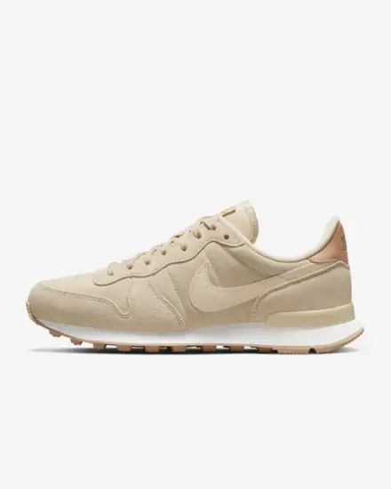

Description de l'article
Initialement conçue pour les athlètes d'élite, la Nike Internationalist s'est vite imposée comme une légende streetwear. La semelle extérieure à motif gaufré emblématique et le logo rétro conservent son look classique, tandis que le coloris monochrome apporte une touche stylée au quotidien.
Couleur affichée : Perle/Beige bio/Blanc sommet/Perle
Article : DV6980-200
Internationalist Beige
99$